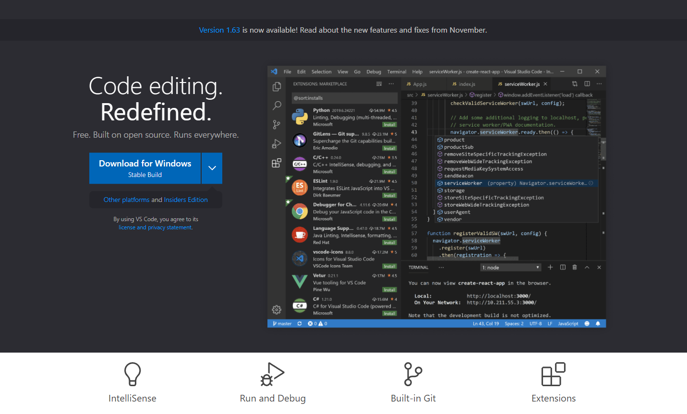
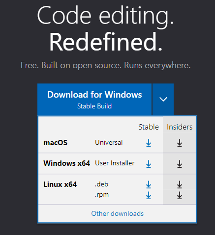
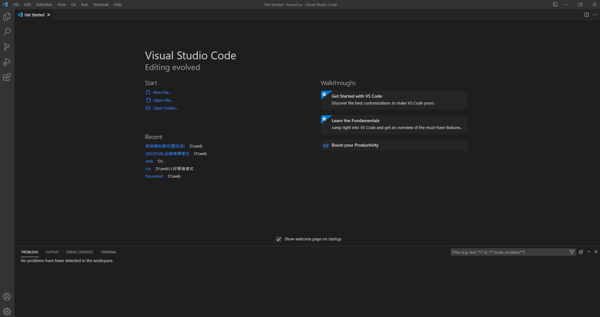
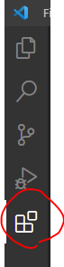
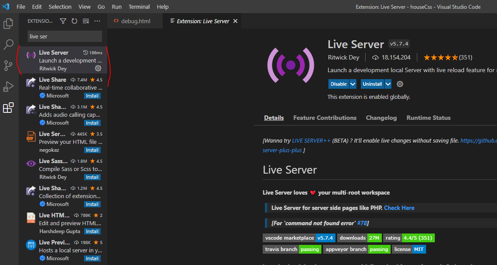
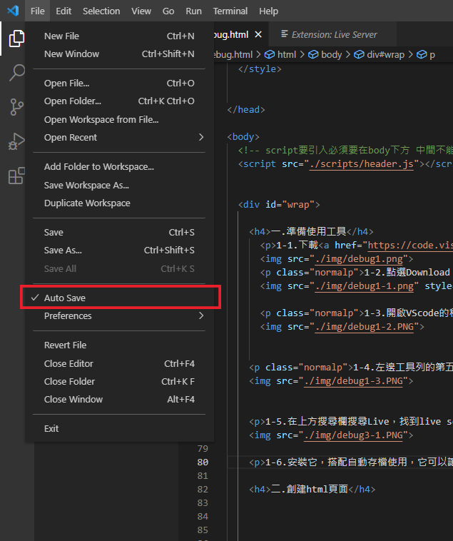
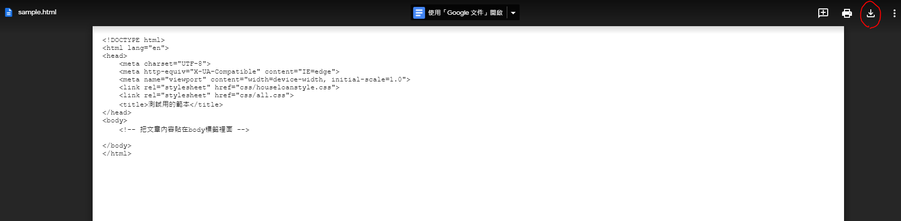
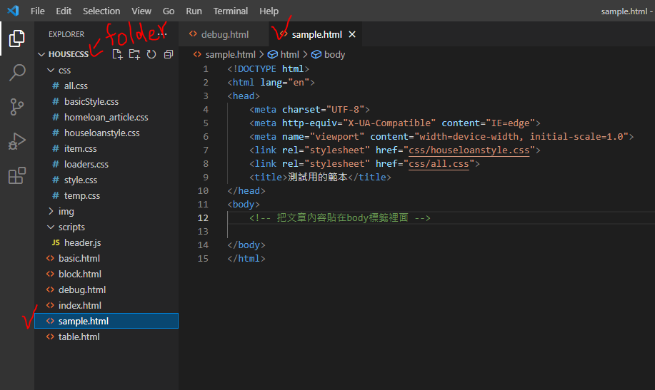
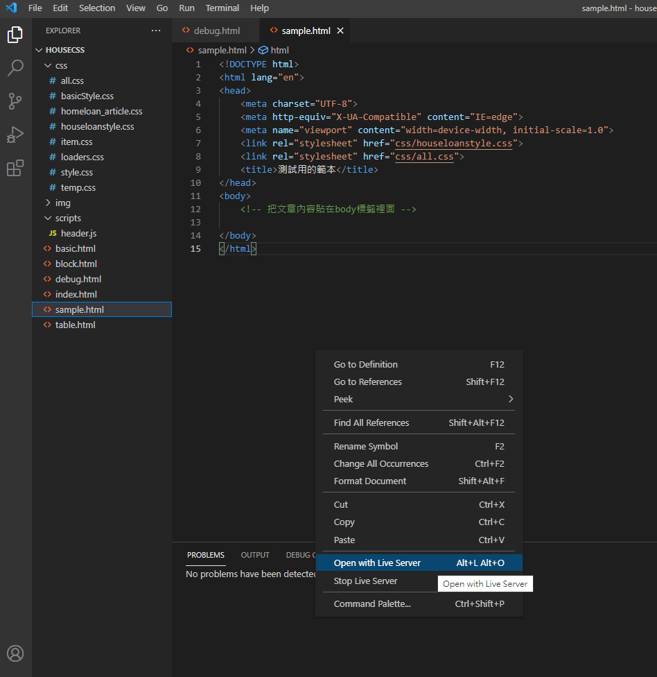

1-1.下載VScode
1-2.點選Download for Windows按鈕，下載Windows x64的穩定(Stable)版本
1-3.開啟VScode的程式會看到這個畫面
1-4.左邊工具列的第五個圖案是外掛，點選他
1-5.在上方搜尋欄搜尋Live，找到live server這個外掛
1-6.安裝它，並在檔案(file)的下拉選單處，勾選自動存檔(Auto Save)搭配使用，它可以讓你即時瀏覽網頁的變化
2-1.開啟存放網站的資料夾(任意創建)，讓vscode能找到檔案路徑
※架設網站重要的概念，請以資料夾為單位存放
2-2.下載這個檔案到存放網站的資料夾
2-3.點選該html檔，開啟這個檔案的編輯畫面
2-4.對著畫面案右鍵點選open with live server，以預設瀏覽器開啟網頁，語法有變更瀏覽器上的頁面也會即時更換
2-5.在body內貼上文章，如果語法被標上紅字表示前後可能有錯(預設為好事貸樣式)
※它只能檢查出少括號這種錯誤，打錯樣式或少標籤是檢查不出來的